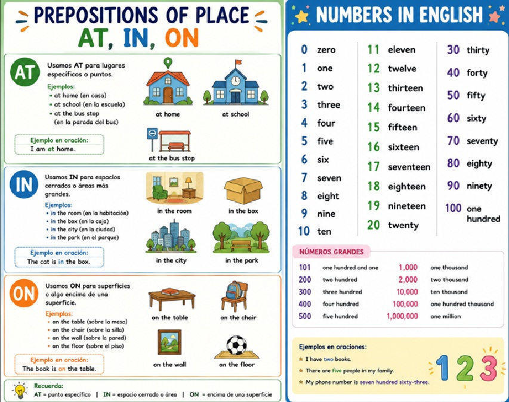

【Breve descripción de lo que aprenderás en esta unidad】
Do you know how to say "El libro está sobre la mesa" in English? Or "Ella está en la escuela" or "Nos vemos en la esquina"? In English, we use different words to express where something or someone is. These words are called prepositions of place (preposiciones de lugar), and the three most important ones are AT, IN, and ON.
En esta unidad vamos a estudiar las preposiciones de lugar AT, IN y ON en inglés. Aprenderás cuándo usar cada una, verás muchos ejemplos, y practicarás con ejercicios. Estas tres palabras son muy pequeñas, ¡pero muy importantes! Usarlas bien te ayudará a hablar inglés con más precisión y naturalidad.
En español, usualmente usamos una sola palabra —"en"— para decir in, on y at. Por ejemplo: "Estoy en la casa" (in), "El gato está en el techo" (on), "Te espero en la puerta" (at). ¡Pero en inglés usamos tres palabras diferentes! Por eso es importante aprender a distinguirlas.
Antes de aprender las preposiciones de lugar, es importante que conozcas los números en inglés. Los números naturales (1, 2, 3, 4, 5...) los usamos todos los días para contar, dar direcciones, decir la hora, hablar de precios, edades, teléfonos y mucho más. ¡Vamos a aprenderlos!
Estos son los números básicos que debes memorizar primero. Son la base para formar todos los demás números.
| Number | English | Español | Pronunciation (Pronunciación) |
|---|---|---|---|
| 1 | One | Uno | /wʌn/ (uan) |
| 2 | Two | Dos | /tuː/ (tu) |
| 3 | Three | Tres | /θriː/ (zrii) |
| 4 | Four | Cuatro | /fɔːr/ (for) |
| 5 | Five | Cinco | /faɪv/ (faiv) |
| 6 | Six | Seis | /sɪks/ (siks) |
| 7 | Seven | Siete | /ˈsɛv.ən/ (se-ven) |
| 8 | Eight | Ocho | /eɪt/ (eit) |
| 9 | Nine | Nueve | /naɪn/ (nain) |
| 10 | Ten | Diez | /tɛn/ (ten) |
| 11 | Eleven | Once | /ɪˈlɛv.ən/ (i-le-ven) |
| 12 | Twelve | Doce | /twɛlv/ (tuelv) |
| 13 | Thirteen | Trece | /θɜːrˈtiːn/ (zir-tiin) |
| 14 | Fourteen | Catorce | /fɔːrˈtiːn/ (for-tiin) |
| 15 | Fifteen | Quince | /fɪfˈtiːn/ (fif-tiin) |
| 16 | Sixteen | Dieciséis | /sɪksˈtiːn/ (siks-tiin) |
| 17 | Seventeen | Diecisiete | /ˌsɛv.ənˈtiːn/ (se-ven-tiin) |
| 18 | Eighteen | Dieciocho | /ˌeɪˈtiːn/ (ei-tiin) |
| 19 | Nineteen | Diecinueve | /ˌnaɪnˈtiːn/ (nain-tiin) |
| 20 | Twenty | Veinte | /ˈtwɛn.ti/ (tuen-ti) |
🔹 One, two, three: Son los primeros tres. ¡Son únicos y hay que memorizarlos!
🔹 Four → fourteen → forty: Observa que "four" se repite en "fourteen" (14) y "forty" (40).
🔹 Five → fifteen → fifty: "Five" cambia a "fif-" en "fifteen" (15) y "fifty" (50).
🔹 Del 13 al 19: Todos terminan en "-teen" (que significa "diez" + número). ¡Como "thirteen", "fourteen", "sixteen"!
🔹 Del 20 en adelante: Terminan en "-ty" como "twenty" (20), "thirty" (30), "forty" (40).
Las decenas se forman agregando "-ty" al final. ¡Observa los cambios en algunos números!
| Number | English | Español | Note (Nota) |
|---|---|---|---|
| 20 | Twenty | Veinte | — |
| 30 | Thirty | Treinta | Three → thir-ty (cambio) |
| 40 | Forty | Cuarenta | Four → for-ty (sin "u") |
| 50 | Fifty | Cincuenta | Five → fif-ty (cambio) |
| 60 | Sixty | Sesenta | Six → sixty |
| 70 | Seventy | Setenta | Seven → seventy |
| 80 | Eighty | Ochenta | Eight → eighty (solo una "t") |
| 90 | Ninety | Noventa | Nine → ninety |
| 100 | One hundred | Cien | — |
Para formar números entre 21 y 99, solo combina la decena + la unidad con un guion (-):
Fórmula: Decena + guion + Unidad
📌 21 = Twenty + - + one = Twenty-one
📌 34 = Thirty + - + four = Thirty-four
📌 47 = Forty + - + seven = Forty-seven
📌 52 = Fifty + - + two = Fifty-two
📌 68 = Sixty + - + eight = Sixty-eight
📌 75 = Seventy + - + five = Seventy-five
📌 83 = Eighty + - + three = Eighty-three
📌 99 = Ninety + - + nine = Ninety-nine
| Number | English | Español |
|---|---|---|
| 21 | Twenty-one | Veintiuno |
| 32 | Thirty-two | Treinta y dos |
| 45 | Forty-five | Cuarenta y cinco |
| 58 | Fifty-eight | Cincuenta y ocho |
| 63 | Sixty-three | Sesenta y tres |
| 77 | Seventy-seven | Setenta y siete |
| 84 | Eighty-four | Ochenta y cuatro |
| 99 | Ninety-nine | Noventa y nueve |
Para números más grandes, usamos hundred (cien), thousand (mil) y million (millón).
| Number | English | Español |
|---|---|---|
| 100 | One hundred | Cien |
| 101 | One hundred one (o one hundred and one) | Ciento uno |
| 125 | One hundred twenty-five | Ciento veinticinco |
| 200 | Two hundred | Doscientos |
| 350 | Three hundred fifty | Trescientos cincuenta |
| 500 | Five hundred | Quinientos |
| 1,000 | One thousand | Mil |
| 2,500 | Two thousand five hundred | Dos mil quinientos |
| 10,000 | Ten thousand | Diez mil |
| 100,000 | One hundred thousand | Cien mil |
| 1,000,000 | One million | Un millón |
En inglés británico se usa "and" después de "hundred": One hundred and twenty-five (125).
En inglés americano es común omitir el "and": One hundred twenty-five.
¡Ambas formas son correctas! En este curso usaremos la forma americana (sin "and") por simplicidad.
Contar en inglés es muy útil para memorizar la secuencia de los números. Practica contando en voz alta:
1-10: One, two, three, four, five, six, seven, eight, nine, ten.
11-20: Eleven, twelve, thirteen, fourteen, fifteen, sixteen, seventeen, eighteen, nineteen, twenty.
21-30: Twenty-one, twenty-two, twenty-three, twenty-four, twenty-five, twenty-six, twenty-seven, twenty-eight, twenty-nine, thirty.
Ten, twenty, thirty, forty, fifty, sixty, seventy, eighty, ninety, one hundred.
One hundred, two hundred, three hundred, four hundred, five hundred, six hundred, seven hundred, eight hundred, nine hundred, one thousand.
Reglas importantes para escribir números en inglés:
| Rule (Regla) | Example (Ejemplo) |
|---|---|
| Los números del 1 al 20 se escriben con una sola palabra | seven, twelve, nineteen |
| Las decenas (20, 30, 40...) se escriben con una sola palabra | twenty, thirty, forty, sixty |
| Los números entre 21 y 99 llevan guion entre la decena y la unidad | twenty-one, thirty-four, ninety-nine |
| Después de "hundred" no se pone "s" (es invariable) | Two hundred (no "two hundreds") |
| Lo mismo con "thousand" y "million" | Five thousand, three million |
| Para números grandes, separa con comas cada 3 dígitos | 1,234 = One thousand two hundred thirty-four |
Los números en inglés se usan en muchas situaciones cotidianas. Aquí algunos ejemplos:
| Situation (Situación) | Example (Ejemplo) | Traducción |
|---|---|---|
| 📞 Phone numbers (Números de teléfono) | My phone number is three-zero-one, five-five-five, seven-eight-nine-zero. | Mi número es 301-555-7890. |
| 🏠 Addresses (Direcciones) | I live at twenty-five Oak Street. | Vivo en la calle Oak #25. |
| 💰 Prices (Precios) | This book costs fifteen dollars and fifty cents. | Este libro cuesta $15.50. |
| 🎂 Ages (Edades) | She is twelve years old. | Ella tiene doce años. |
| ⏰ Time (Hora) | It is three thirty (3:30). | Son las tres y media. |
| 📅 Dates (Fechas) | Today is March fifteenth, twenty twenty-six. | Hoy es 15 de marzo de 2026. |
Escribe cada número en inglés:
Escribe el número en dígitos:
Cuenta y escribe en inglés:
Escribe los números en inglés para cada situación:
Las prepositions of place son palabras que nos indican dónde está algo o alguien. Responden a la pregunta "Where?" (¿Dónde?). En inglés, las tres preposiciones de lugar más comunes son:
| Preposition | Meaning (Significado) | Use (Uso general) |
|---|---|---|
| IN | Dentro de / En (lugares cerrados o áreas) | Cuando algo está dentro de un espacio o en un área general |
| ON | Sobre / En (superficies) | Cuando algo está sobre una superficie o contacto directo |
| AT | En (punto específico) | Cuando algo está en un punto exacto o lugar específico |
Usamos IN cuando algo o alguien está dentro de un espacio o en un área general. También se usa con ciudades, países y lugares grandes.
🔹 Enclosed spaces (Espacios cerrados): in a room, in a box, in a car, in a house
🔹 Geographical areas (Áreas geográficas): in a city, in a country, in a neighborhood
🔹 Natural spaces (Espacios naturales): in the park, in the forest, in the garden
🔹 Bodies of water (Cuerpos de agua): in the river, in the pool, in the sea
🔹 Lines / rows (Filas): in line, in a row
| Example | Traducción |
|---|---|
| The book is in my bag. | El libro está dentro de mi mochila. |
| She lives in Bogotá. | Ella vive en Bogotá. |
| We are in the classroom. | Nosotros estamos en el salón de clase. |
| He is in the pool. | Él está en la piscina. |
| They are in the garden. | Ellos están en el jardín. |
| The milk is in the refrigerator. | La leche está dentro del refrigerador. |
| I am in line for tickets. | Estoy en la fila para las entradas. |
Usamos ON cuando algo está sobre una superficie o en contacto con ella. También se usa con calles, pisos de edificios, y medios de transporte público.
🔹 Surfaces (Superficies): on the table, on the wall, on the floor, on the ceiling
🔹 Streets / avenues (Calles / avenidas): on Main Street, on 5th Avenue
🔹 Floors of a building (Pisos): on the first floor, on the second floor
🔹 Public transport (Transporte público): on the bus, on the train, on the plane
🔹 Technology / media (Tecnología / medios): on TV, on the phone, on the internet, on a screen
🔹 Body parts (Partes del cuerpo): on your head, on my foot
| Example | Traducción |
|---|---|
| The cat is on the roof. | El gato está sobre el techo. |
| I live on 10th Street. | Vivo en la calle 10. |
| My book is on the desk. | Mi libro está sobre el escritorio. |
| She is on the bus right now. | Ella está en el autobús ahora mismo. |
| The restaurant is on the second floor. | El restaurante está en el segundo piso. |
| I saw it on TV. | Lo vi en la televisión. |
| The picture is on the wall. | El cuadro está en la pared. |
| He is on the phone. | Él está al teléfono. |
Usamos AT cuando hablamos de un punto específico o una ubicación exacta. No nos interesa si es un espacio cerrado o abierto, solo que es un lugar concreto.
🔹 Specific addresses (Direcciones específicas): at 123 Main Street
🔹 Specific points (Puntos específicos): at the door, at the bus stop, at the corner
🔹 Events (Eventos): at the party, at the concert, at the meeting
🔹 Public places (Lugares públicos como punto de encuentro): at the cinema, at the mall, at the park (como punto)
🔹 Work / school (Trabajo / escuela como actividad): at work, at school, at university
🔹 Technology (Tecnología - usuario): at the computer, at the keyboard
| Example | Traducción |
|---|---|
| She is at the bus stop. | Ella está en la parada del autobús. |
| I am at home. | Estoy en casa. |
| He is at work. | Él está en el trabajo. |
| We meet at the cinema. | Nos encontramos en el cine. |
| She is at school. | Ella está en la escuela. |
| The kids are at the party. | Los niños están en la fiesta. |
| I am sitting at my desk. | Estoy sentado en mi escritorio. |
| He lives at 25 Oak Street. | Él vive en la calle Oak #25. |
A veces la misma palabra en español ("en") puede traducirse de diferentes maneras en inglés. ¡Todo depende del contexto! Mira esta comparación:
| Situation | ✏️ Example in Spanish | ✅ Correct English | ❌ Incorrect | Why? |
|---|---|---|---|---|
| Dentro de un espacio | Estoy en mi cuarto | I am in my room. | I am on my room. | Room es espacio cerrado → IN |
| Sobre una superficie | El lápiz está en la mesa | The pencil is on the table. | The pencil is in the table. | Table es superficie → ON |
| Dirección exacta | Vive en la Calle 5 | He lives on 5th Street. | He lives in 5th Street. | Calle (sin número) → ON |
| Dirección con número | Vive en el #25 | He lives at 25 5th Street. | He lives in 25 5th Street. | Dirección exacta → AT |
| Ciudad o país | Vive en Colombia | He lives in Colombia. | He lives on Colombia. | País / ciudad → IN |
| Evento / reunión | Está en la fiesta | He is at the party. | He is in the party. | Evento social → AT |
| Transporte público | Está en el autobús | She is on the bus. | She is in the bus. | Transporte público → ON |
| Transporte privado | Está en el carro | She is in the car. | She is on the car. | Carro (espacio cerrado) → IN |
Hay algunas expresiones fijas que debes memorizar. No siempre siguen la regla general, pero son muy comunes:
| Preposition | Fixed expression | Example | Traducción |
|---|---|---|---|
| IN | in the morning / afternoon / evening | I study in the morning. | Yo estudio en la mañana. |
| IN | in bed | He is in bed. | Él está en la cama. |
| IN | in hospital | She is in hospital. | Ella está hospitalizada. |
| IN | in prison | He is in prison. | Él está en la cárcel. |
| ON | on the left / right | The bank is on the left. | El banco está a la izquierda. |
| ON | on TV / radio | The news is on TV. | Las noticias están en la TV. |
| ON | on holiday / vacation | We are on vacation. | Estamos de vacaciones. |
| ON | on a farm | They live on a farm. | Ellos viven en una granja. |
| AT | at home | I am at home. | Estoy en casa. |
| AT | at work | She is at work. | Ella está en el trabajo. |
| AT | at school | The kids are at school. | Los niños están en la escuela. |
| AT | at night | I sleep at night. | Duermo en la noche. |
| AT | at the same time | We arrived at the same time. | Llegamos al mismo tiempo. |
AT home = en casa (concepto general, el lugar donde vives).
IN my house = dentro de mi casa (énfasis en el espacio físico).
Ejemplo: "I am at home" (estoy en casa - en general). "The party is in my house" (la fiesta es dentro de mi casa).
¡Ambas son correctas, pero se usan en contextos diferentes!
Lee este diálogo y observa cómo se usan AT, IN y ON en contexto:
Sofia: Hi, Tom! Where are you at the moment?
Tom: I'm at the bus stop. I'm waiting for the bus.
Sofia: Oh, I see! Where are you going?
Tom: I'm going to school. My backpack is on my back, and my books are in my backpack.
Sofia: Cool! Is your school far?
Tom: It's on Green Street, on the corner at 123 Green Street.
Sofia: And where is your mom?
Tom: She is at work. She works in a hospital in the city center.
Sofia: What about your dad?
Tom: He is on the bus right now. He is coming home. His office is on the 5th floor on Park Avenue.
Sofia: Great! And your sister?
Tom: She's at home. She is in her room, sitting on her bed, reading a book.
Sofia: Nice! Well, here comes my bus! See you at school!
Tom: See you there!
Aquí tienes un resumen visual para recordar cuándo usar cada preposición:
| Preposition | Use (Uso) | Examples (Ejemplos) |
|---|---|---|
| IN | Enclosed spaces (Espacios cerrados) | in a room, in a box, in a car |
| Geographic areas (Áreas geográficas) | in Bogotá, in Colombia, in South America | |
| Natural spaces (Espacios naturales abiertos) | in the park, in the forest, in the garden | |
| Water (Agua) | in the pool, in the river, in the sea | |
| ON | Surfaces (Superficies) | on the table, on the wall, on the floor |
| Streets / Avenues (Calles / Avenidas) | on Main Street, on 5th Avenue | |
| Floors (Pisos) | on the first floor, on the second floor | |
| Public transport (Transporte público) | on the bus, on the train, on the plane | |
| Technology (Tecnología / medios) | on TV, on the phone, on the internet | |
| AT | Specific point (Punto específico) | at the door, at the corner, at the bus stop |
| Exact addresses (Direcciones exactas) | at 123 Main Street | |
| Events (Eventos) | at the party, at the concert, at the meeting | |
| Fixed expressions (Expresiones fijas) | at home, at work, at school |
Estas palabras y expresiones te ayudarán a practicar las preposiciones de lugar:
| English | Español | Example with preposition |
|---|---|---|
| The table | La mesa | on the table |
| The chair | La silla | on the chair |
| The bag / backpack | La mochila | in my backpack |
| The room | El cuarto / la habitación | in the room |
| The kitchen | La cocina | in the kitchen |
| The wall | La pared | on the wall |
| The floor | El piso | on the floor |
| The door | La puerta | at the door |
| The corner | La esquina | at the corner |
| The bus stop | La parada de autobús | at the bus stop |
| The park | El parque | in the park |
| The bed | La cama | in bed / on the bed |
| The street | La calle | on the street |
| The roof | El techo | on the roof |
| The river | El río | in the river |

Completa cada oración con la preposición correcta (IN, ON o AT):
Escoge la preposición correcta entre IN, ON o AT:
Traduce las siguientes oraciones al inglés. ¡Usa la preposición correcta!
Corrige los errores en estas oraciones. Algunas pueden estar correctas:
📄 Download the worksheet:
📘 TALLER UNIDAD 2 - PREPOSITIONS OF PLACE (PDF)